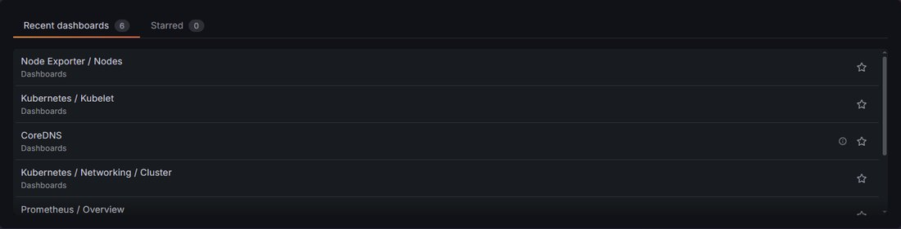

Polaris
Portátil HP con Proxmox VE 9.2 (kernel 7.0 pve), arranque EFI con Secure Boot. Ejecuta las dos máquinas virtuales del clúster.
HP laptop running Proxmox VE 9.2 (7.0 pve kernel), EFI boot with Secure Boot. It runs both cluster VMs.
~/proyectos $ kubectl get nodes
Homelab · en evolución Homelab · work in progress
Un portátil HP reciclado con Proxmox VE, dividido en dos máquinas virtuales Debian que, junto a Orion, una Raspberry Pi 4, forman un clúster de Kubernetes montado a mano con kubeadm. Es mi laboratorio para practicar administración de clústeres, observabilidad y todo lo que no se puede romper en producción. A recycled HP laptop running Proxmox VE, split into two Debian virtual machines that, together with Orion, a Raspberry Pi 4, form a hand-built Kubernetes cluster using kubeadm. It's my lab for practising cluster administration, observability and everything you can't break in production.
Los nombres no son casualidad: Polaris, la estrella polar, es la estrella más brillante de la Osa Menor y el punto fijo alrededor del que parece girar el cielo. Aquí es el host sobre el que giran las dos “osas”. A ellas se suma Orion, como la constelación del cazador: una Raspberry Pi 4 que es el primer nodo físico del clúster. The names aren't random: Polaris, the North Star, is the brightest star in Ursa Minor and the fixed point the sky seems to turn around. Here it's the host both “bears” run on. They're joined by Orion, named after the hunter constellation: a Raspberry Pi 4 that is the cluster's first bare-metal node.
Portátil HP con Proxmox VE 9.2 (kernel 7.0 pve), arranque EFI con Secure Boot. Ejecuta las dos máquinas virtuales del clúster.
HP laptop running Proxmox VE 9.2 (7.0 pve kernel), EFI boot with Secure Boot. It runs both cluster VMs.
Máquina virtual Debian 13 que forma parte del clúster de Kubernetes.
Debian 13 virtual machine that is part of the Kubernetes cluster.
Segunda máquina virtual Debian 13, gemela de OsaMayor, que completa el clúster.
Second Debian 13 virtual machine, OsaMayor's twin, completing the cluster.
Tercer nodo del clúster, fuera del portátil y con sus propios 4 GB de RAM. Ejecuta todo el stack de observabilidad: Prometheus y Grafana.
The cluster's third node, outside the laptop and with its own 4 GB of RAM. It runs the whole observability stack: Prometheus and Grafana.
NetworkPolicies.NetworkPolicies.Captura del panel de Proxmox antes de añadir la Raspberry Pi. La CPU iba sobrada; la memoria, al límite. Snapshot from the Proxmox dashboard before adding the Raspberry Pi. CPU had plenty of headroom; memory was maxed out.
La monitorización funcionaba, pero iba lenta: de vez en cuando los pods de Prometheus y Grafana terminaban en OOMKilled y Kubernetes tenía que reiniciarlos.
Monitoring worked, but slowly: every now and then the Prometheus and Grafana pods ended up OOMKilled and Kubernetes had to restart them.
Los 7,5 GiB del portátil se reparten entre dos VMs de 3,1 GiB, y ambas estaban por encima del 90 % de uso. El stack de observabilidad es de lo que más memoria consume del clúster, y el host iba al 92 % aunque KSM deduplicaba unos 291 MiB entre las VMs.
The laptop's 7.5 GiB are split between two 3.1 GiB VMs, both of which were above 90 % usage. The observability stack is one of the hungriest workloads in the cluster, and the host sat at 92 % even with KSM deduplicating about 291 MiB across the VMs.
He añadido Orion, una Raspberry Pi 4 de 4 GB, como tercer nodo, fuera del portátil, y he llevado a ella todo el stack de observabilidad: Prometheus y Grafana se ejecutan ahora en Orion, con su propia memoria, y las dos VMs dejan de cargar con lo que más RAM consumía. Además, el clúster mezcla ya un nodo arm64 con los dos x86, lo que obliga a trabajar con imágenes multiarquitectura.
El resultado se ve en el propio Prometheus: el contador de OOM kills del kernel que expone Node Exporter, node_vmstat_oom_kill, está a 0.
I added Orion, a 4 GB Raspberry Pi 4, as a third node, outside the laptop, and moved the whole observability stack onto it: Prometheus and Grafana now run on Orion, with their own memory, so the two VMs no longer carry the hungriest workload. The cluster now also mixes an arm64 node with the two x86 ones, which means working with multi-arch images.
The result shows up in Prometheus itself: the kernel OOM kill counter exposed by Node Exporter, node_vmstat_oom_kill, sits at 0.
# PromQL · contador de OOM kills (Node Exporter)# PromQL · OOM kill counter (Node Exporter)
> node_vmstat_oom_kill
0Grafana, alimentado por Prometheus y ambos ejecutándose en Orion (la Raspberry Pi 4), con dashboards de nodos (Node Exporter), Kubelet, CoreDNS, red del clúster y del propio Prometheus. Es el mismo tipo de herramientas que usaba en Datatronics, ahora montadas y mantenidas por mí. Grafana, fed by Prometheus, both running on Orion (the Raspberry Pi 4), with dashboards for nodes (Node Exporter), Kubelet, CoreDNS, cluster networking and Prometheus itself. The same kind of tooling I used at Datatronics, now built and run by me.

Uso de RAM de cada nodo a lo largo del tiempo, con los hitos del homelab marcados encima. Lo iré actualizando a medida que el clúster cambie. RAM usage for each node over time, with the homelab's milestones marked on top. I'll keep it updated as the cluster changes.
Cargando datos…Loading data…
Con un nodo arm64 y dos x86, revisar qué imágenes soportan ambas arquitecturas y decidir en qué nodo debe correr cada workload.
With one arm64 node and two x86 ones, check which images support both architectures and decide where each workload should run.
Con Prometheus y Grafana ya en su propio nodo, el siguiente paso es configurar alertas y no solo mirar dashboards.
With Prometheus and Grafana on their own node, the next step is setting up alerts instead of just watching dashboards.
Usar el clúster como campo de prácticas para la certificación Certified Kubernetes Administrator.
Use the cluster as a training ground for the Certified Kubernetes Administrator exam.
¿Te interesa cómo monté el 5G del TFG sobre Kubernetes? Está documentado paso a paso en su propia página. Curious how I ran 5G on Kubernetes for my thesis? It's documented step by step on its own page.